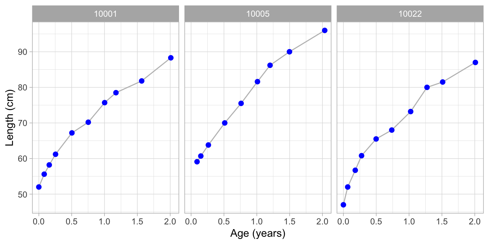

Overview of main functions
Stef van Buuren
2020-05-10
mainfunctions.RmdObjective
This vignette demonstrates three major functions in the brokenstick package: brokenstick(), predict() and plot().
Set up libraries
This vignette uses functions from the rbokeh, hbgd and brokenstick packages.
if (!require(rbokeh)) devtools::install_github("hafen/rbokeh") if (!require(hbgd)) devtools::install_github("HBGDki/hbgd") require("hbgd") require("brokenstick")
Load data set
The smocc_50 data in the brokenstick package contain the heights of 50 Dutch children measured on 10 visits at ages 0-2 years.
## # A tibble: 3 x 5
## subjid age sex hgt hgt.z
## <dbl> <dbl> <chr> <dbl> <dbl>
## 1 10001 0 female 52 0.575
## 2 10001 0.0821 female 55.6 0.888
## 3 10001 0.159 female 58.2 0.797Plot trajectories
Let us first plot some of the individual growth curves. We may do so after fitting a trivial broken stick model, and plot the trajectories of the three selected children as follows:
fit <- brokenstick(y = smc$hgt, x = smc$age, subjid = as.factor(smc$subjid))
## boundary (singular) fit: see ?isSingularids <- c(10001, 10005, 10022) plot(fit, ids = ids, zband = FALSE, height = 350, width = 225, ylab = "Length (cm)")
## Warning: Removed 1 rows containing missing values (geom_point).
The plots gain more resolution when the Standard Deviation Scores (SDS) (or \(Z\)-values) are plotted. The column hgt.z contains the \(Z\)-scores of height relative to the WHO standard.
fit0 <- brokenstick(y = smc$hgt.z, x = smc$age, subjid = as.factor(smc$subjid)) plot(fit0, ids = ids)
## Warning: Removed 1 rows containing missing values (geom_point).
The same type of plot can be made by bokeh:
fit0 <- brokenstick(y = smc$hgt.z, x = smc$age, subjid = as.factor(smc$subjid)) plot(fit0, ids = ids, pkg = "bokeh", height = 350, width = 225)
Fit broken stick model with two lines
The broken stick model describes a trajectory by a series of connected straight lines. We first calculate a rough approximation in the above trajectories using just two lines. The first line starts at birth and end at the age of exactly 1 years. The second line spans the period between 1 to 2 years. In addition, the lines must connect at the age of 1 year. We estimate this model as follows:
fit2 <- brokenstick(y = smc$hgt.z, x = smc$age, subjid = smc$subjid, knots = 1:2)
## boundary (singular) fit: see ?isSingularThe fitted model can now be plotted by
## Warning: Removed 1 rows containing missing values (geom_point).
The fixed effects correspond to the mean of sample of children in the data, whereas the correlation between ages is modelled by the random effects. The interpretation of the estimates is discussed in the vignette for prediction.
Extend to nine lines
The plot shows that the two-line model is fairly crude. We now refine the model in the first two years by adding a knot for each age at which a visit was scheduled. This model can be run as
# 10 scheduled visits knots <- round(c(0, 1, 2, 3, 6, 9, 12, 15, 18, 24)/12, 4) fit9 <- brokenstick(y = smc$hgt.z, x = smc$age, subjid = smc$subjid, knots = knots)
## boundary (singular) fit: see ?isSingularThe model contains 11 random effects. This optimization problem is more difficult, so it takes longer to run. In addition, it is common that the optimization routines issue a number of warnings related to the number of random effects relative to the number of observations. In general, these warnings do not seem to affect the quality of the solution.
As before, the observed and fitted trajectories can be plotted by
## Warning: Removed 1 rows containing missing values (geom_point).
The broken stick model now fits the observed data quite close.
Obtain predicted values
The predict() function allows us to obtain various types of predictions from the broken stick model. The simplest call
## subjid x y yhat knot
## 1 10001 0.0000 0.575 0.7179125 FALSE
## 2 10001 0.0821 0.888 0.6606340 FALSE
## 3 10001 0.1588 0.797 0.6071230 FALSE
## 4 10001 0.2546 0.661 0.5402865 FALSEproduces the predicted value (in yhat) for each measured data point for all children used to fit the model in the long output format. The observed \(Z\)-score is stored in column called y, and the corresponding broken stick estimates are stored in the column called yhat. The column knot is set to FALSE if y is actually observed.
We can obtain the locations at which the lines connect (i.e. at the knots) by specifying the at = "knots" argument, e.g.
## subjid x y yhat knot
## 1 10001 0.0000 NA 0.717912494 TRUE
## 2 10001 1.0000 NA 0.020245630 TRUE
## 3 10001 2.0000 NA -0.009420157 TRUE
## 4 10001 2.1191 NA 0.356100378 TRUENote that the column knot is now TRUE. Note there are also knots at ages 0.00 and 2.68 years. These are boundary knots, and added by the brokenstick() function. By default, the boundary knots span the age range in the data. The estimate for the knot at the maximum age has no useful interpretation. We may obtain estimates at both knots and observed ages by setting at = "both".
Explained variance
The proportion of the variance of the outcome explained by the two-line model is
get_pev(fit2)
## [1] 0.771434For the second model we get
get_pev(fit9)
## [1] 0.9405596so the nine-line broken stick model explains about 94 percent of the variance of the height SDS.
Subject level analysis
Suppose we are interest in knowing the effect of sex, gestational age and birth weight on the height SDS at the age of 2 years. This is an analysis at the subject level. The get_subject_data() function from the hbgd package extracts the variables that vary only over subjects.
subj <- get_subject_data(smc) head(subj, 3)
The broken stick estimates per subject from the nine line solution are obtained by
The names of the columns correspond to the ages at which the knots were placed. The effect of the subject’s sex, gestational age and birth weight on the height SDS at the age of 2 years (here denoted by the variable named 2) can be estimated as
Note that the analysis shows there is a substantial effect of birth weight. Of course, it might be that birth weight is directly related to height at the age of 2 years. Alternatively, the relation could be mediated by birth length. The following model adds birth length (the variable named 0) to the model:
The effect of birth length on length at age 2 is very strong. There is no separate effect of birth weight anymore, so this analysis suggests that the relation between birth weight and length at age 2 can be explained by their mutual associations to birth length.
Conclusion
This vignette illustrated the use of the brokenstick(), plot() and predict() functions. Other vignettes highlight various other capabilities of the package.
-
Fit and predict
- Data exploration
- Conversion back and forth to the Z-score scale
- Export and publish a broken stick model
- Predict growth curve of new subjects
- Assess the quality of the model
-
Model formulation
- Definition of the model
- Interpretation of the model
-
Perfect model
- Properties of the perfect model
- Estimating time-to-time correlations
-
Knot placement
- Knot placement advice